(The content of this page comes from ville-chaumont.fr and centrenationaldugraphisme.fr)
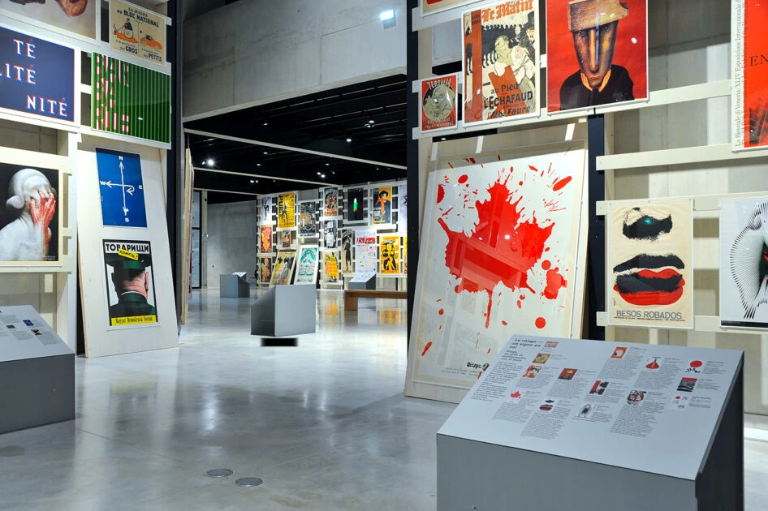
ville-chaumont.fr
The city of Chaumont is known for being the city of graphic design. It begins in 1905, when Gustave Dutailly bequeaths his collection of 5000 posters to the city of Chaumont. Among those are some copies of Toulose-Lautrec, Chéret and Coubrac.
In 1990, the city instigated the first of the International meeting of graphic designs with the posters festival of Chaumont. Furthermore, this festival organises an international contest, in which graphic designers from the whole world take part each year.
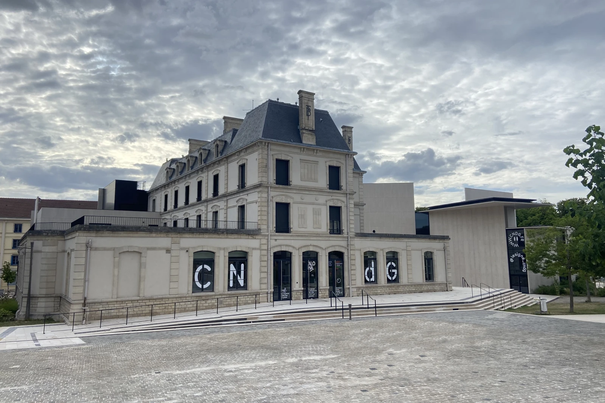
T BRIL
Thus, the city established itself in the field, then providing itself in the leading of graphic design, ensuring the conservation of graphic arts and its initiative in the country. Having acquired a presence, the city of Chaumont carries a project alongside the departement, the region, the country and even the European Union. This is Le Signe, which is the National Center of Graphic design. Unveiled in 2016 in the ancient buildings of the Banque de France and its extension , this place offers exhibitions, workshops and events around graphic design, making the city of Chaumont shine on all scales.
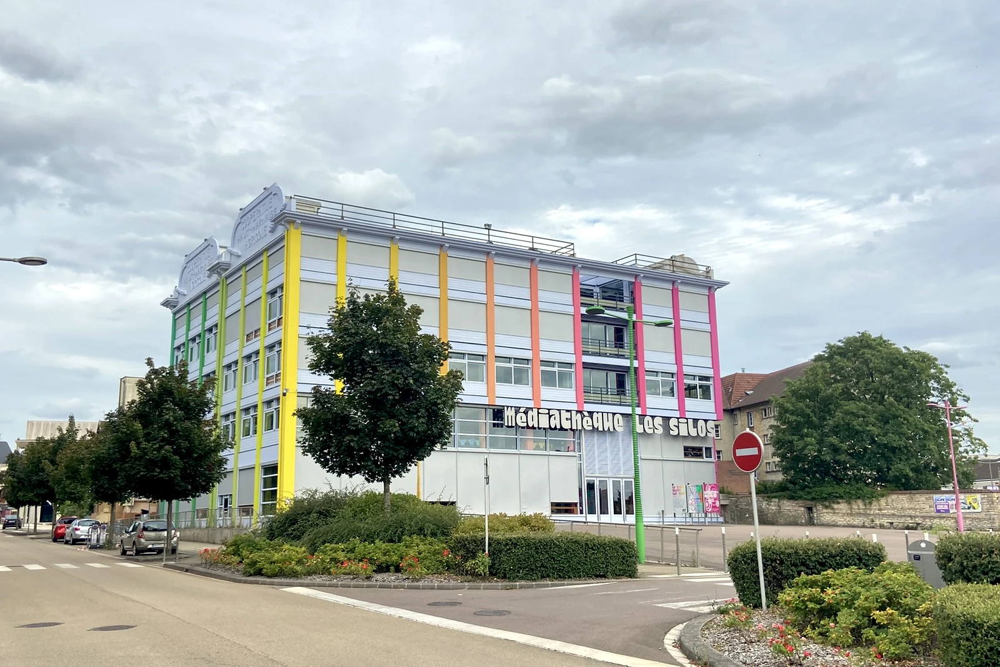
T BRIL
Now rich in posters and ensuring their conservation, the city preserves the ones that are not in exhibition in les Silos (the Silos), called “Maison du Livre et de l’Affiche” (literally House of the book and the Poster). In the past, it was grain silos, nowadays it is a place of storage and conservation of posters, but also a multimedia library.
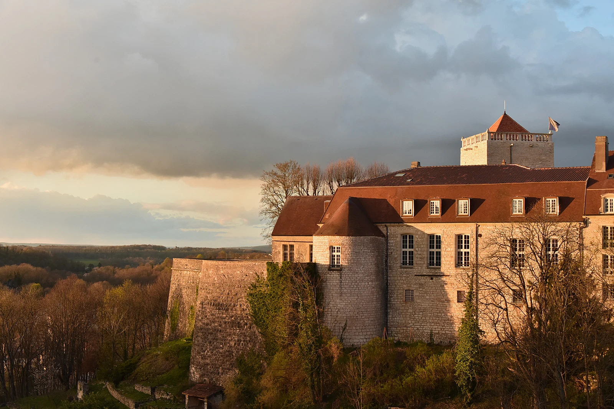
ville-chaumont.fr
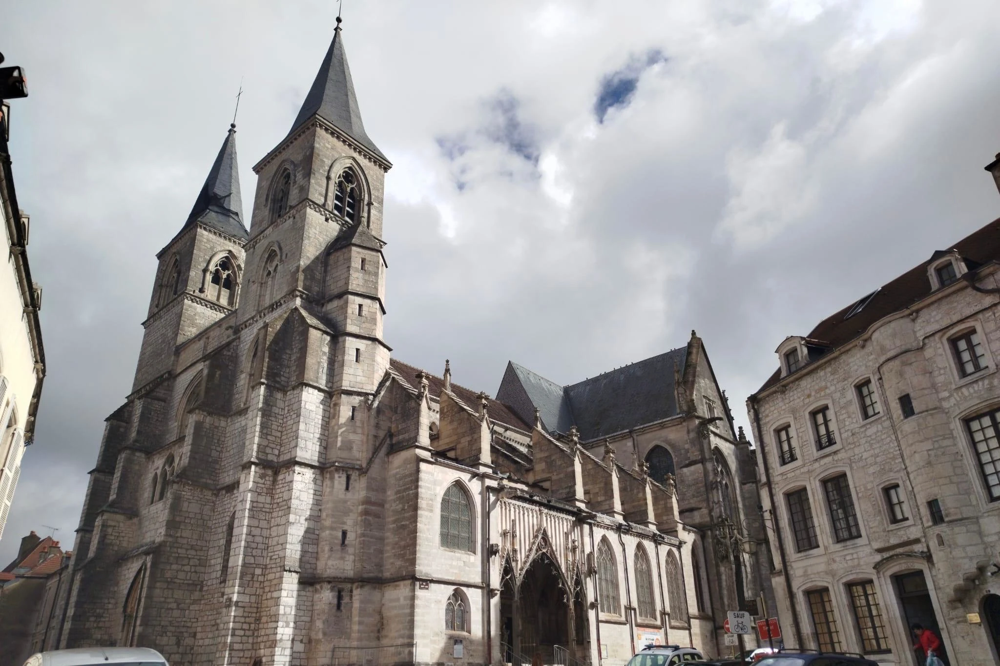
L THIRION
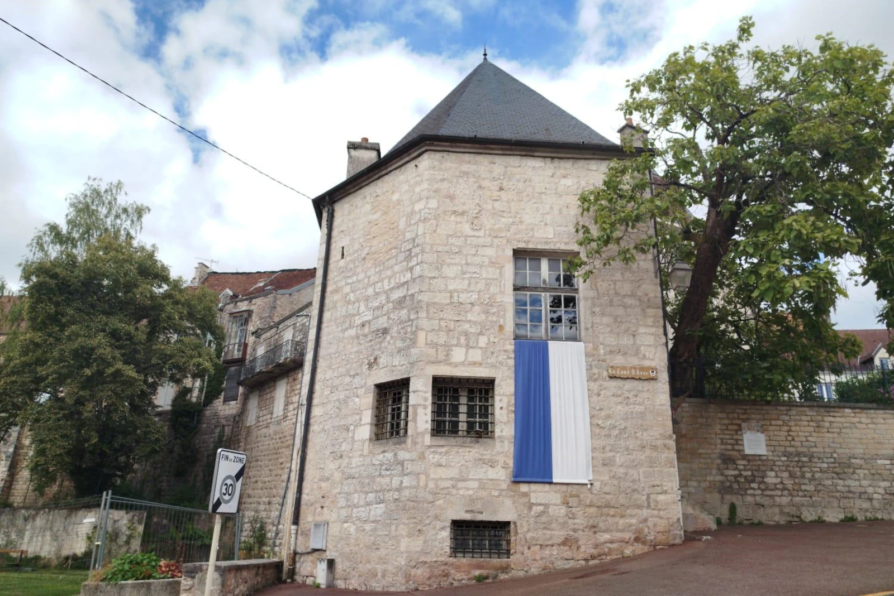
L THIRION
The city of Chaumont is a medieval city, which has preserved its architectural heritage. The city is surrounded by fortifications still visible today and still having historical buildings in its streets. The dungeon (on the left), vestige of the 12th century, is a 19 meters high, squared tower which was used as a jail until 1886. Accessible via the association Médiévalys, it is surrounded by a medieval garden, and a path running against the fortifications. The Saint-Jean Basilica (in the center), built in the 13th century, combines architectural elements from the gothic and the renaissance period. It exhibits works of art and an “Cavaillé-Coll” organ from 1872. “La tour d’Arse” (literally: The Arse tower) (on the right), vestige of the fortifications of the 16th century, shows the South-West entrance of the city. Refurbished and conserving a wooden framework, it butts against a 200-meter-high fortification which links to the bastion of the old castle.
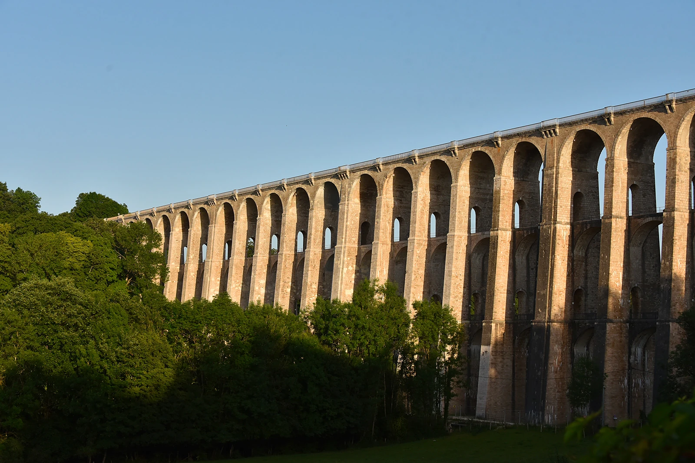
ville-chaumont.fr
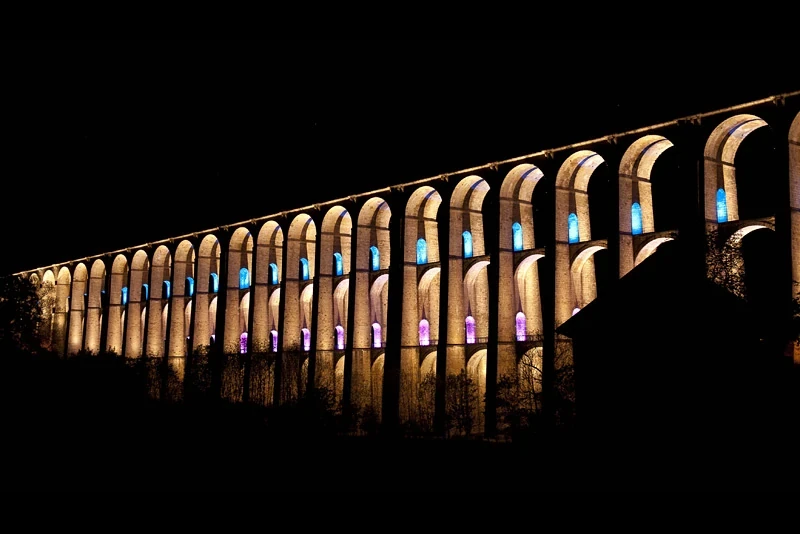
RP from wikimedia.org, no edits
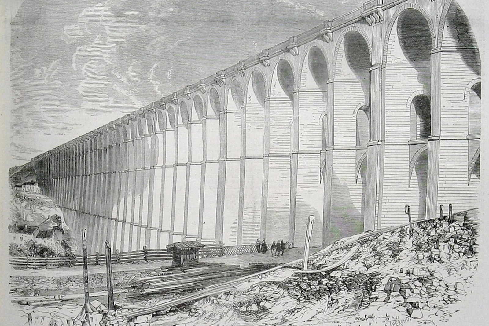
Mr. PETIT from wikimedia.org, no edits
This viaduct is a symbolic building of the city of Chaumont. It was built in only 15 months (from 1855 to 1856) thanks to the work of 2500 workers and 300 horses. It is 600 meters long, supported by 50 arches, with the tallest being 52 meters above “La vallée de la Marne" (literally: the Marne Valley), allowing access to the upper part of the town and thus allowing the steam train to link Paris to Strasbourg. Designed by the engineer Eugène Decomble, it is a remarkable example of the railway architecture of the 19th century. Partially destroyed during world war two, it was rebuilt in 1946 and stays nowadays a railway daily used.
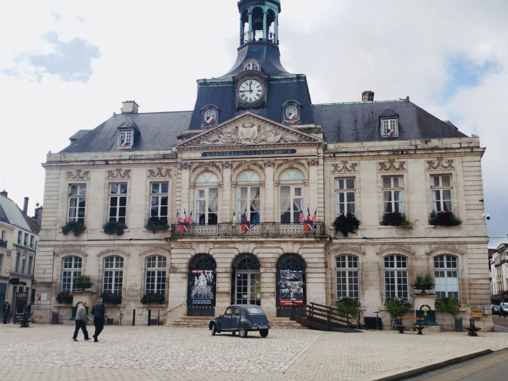
L THIRION
The city hall was designed by the architect François-Nicolas Lancret and built around 1787-1790. Inside is the room for the city council, which is made available for us thanks to the city.
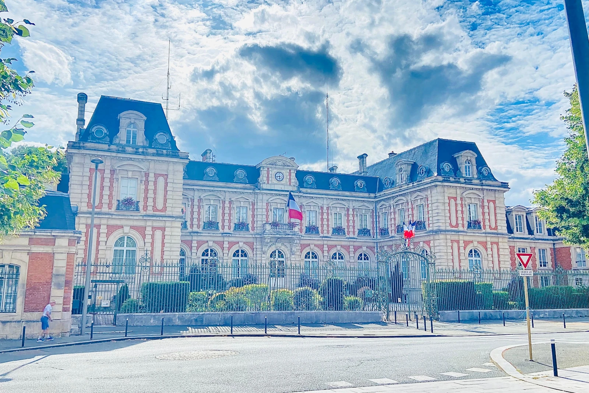
T BRIL
The prefectural system was created in February 1800 by Lucien Bonaparte (brother of Napoléon Bonaparte), at this point consul. Here, it is a departmental prefecture, where regional prefectures also exist.
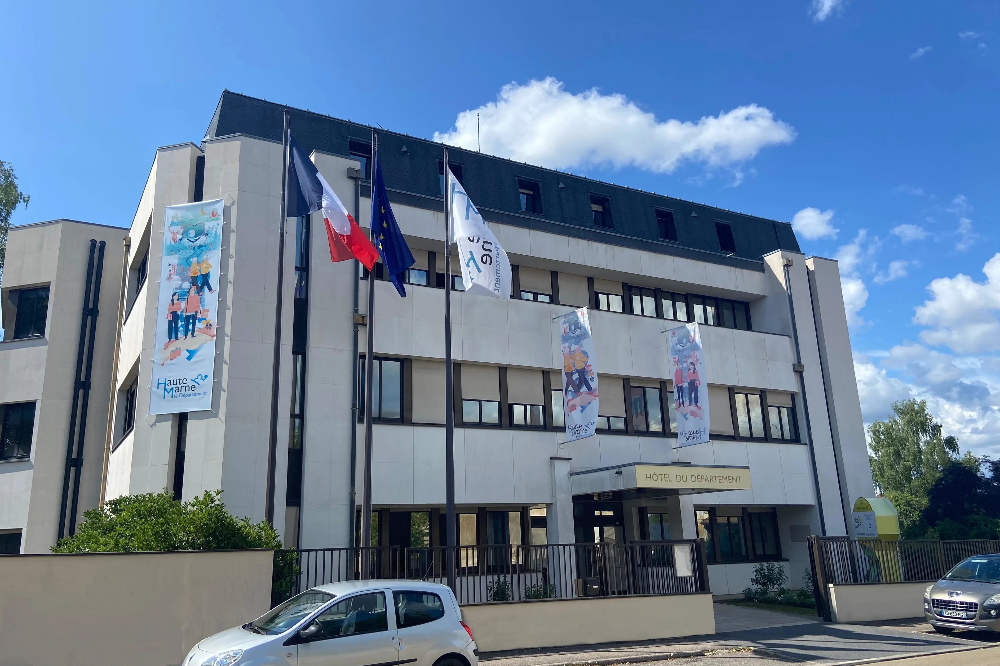
T BRIL
Nearby is the departmental central management headquarters, where you can find the Niederberger room, used for intern or important and official meetings.
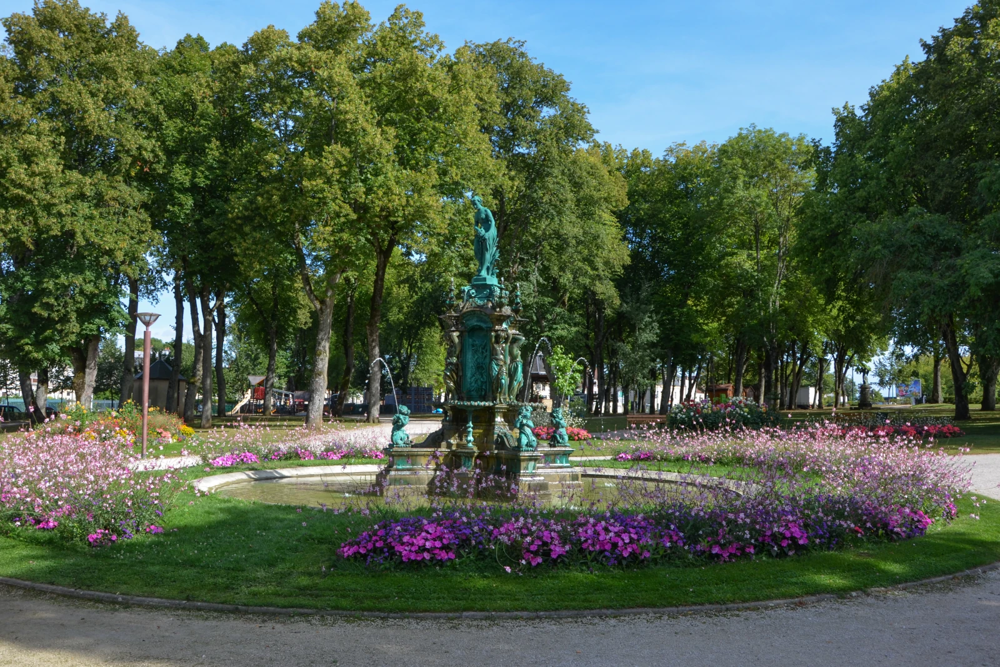
Pline from wikimedia.org, no edits
The daily life inside Chaumont is enjoyable, with parks and gardens to go for a walk and unwind. There is the “square du Boulingrin” (literally: park of the Boulingrin) where you can find a fountain made by the sculptor Edme Bouchardon, as well as a bandstand.
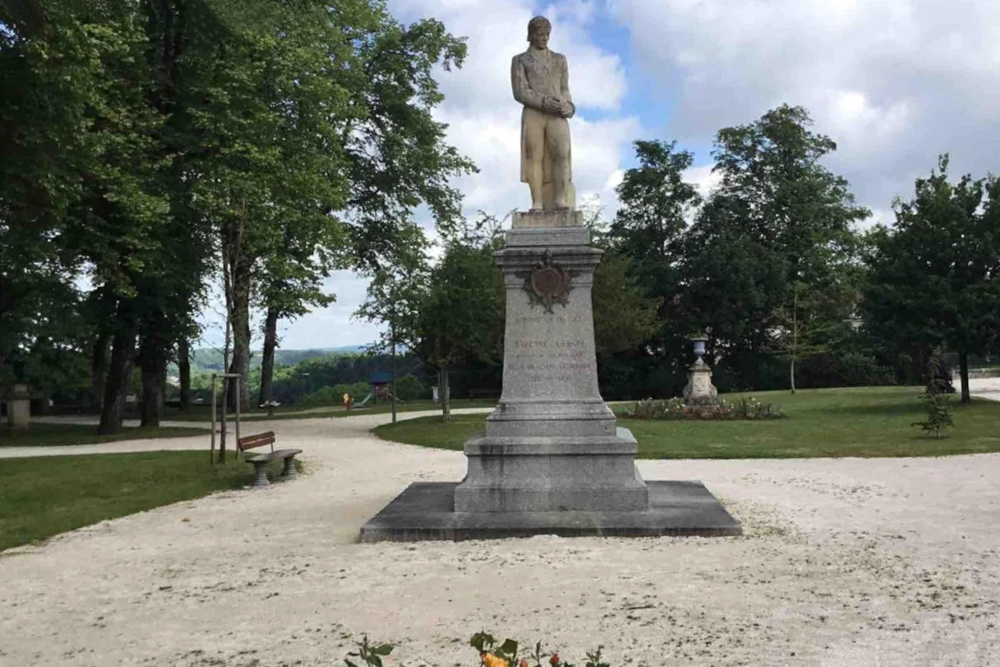
R P DELSAUT from geneanet.org, no edits
Also, the “square Philippe Lebon” (literally: Philippe Lebon park) stand on top of the fortifications, giving a splendid view of the “vallée de la Marne”. It is often a place of meeting, during the medieval festival or the annual music festival.